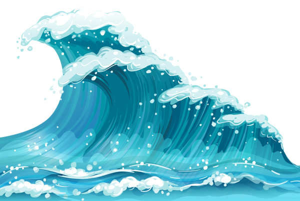
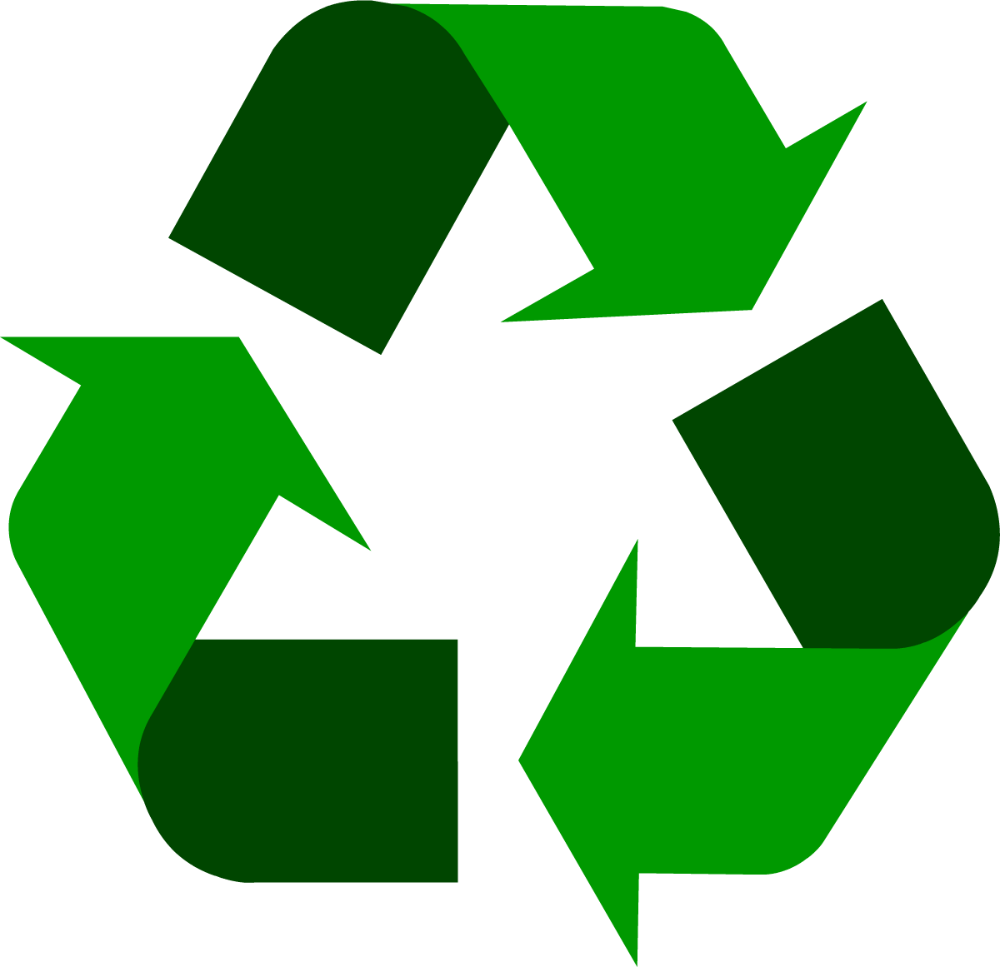

Why is Plastic Pollution a Problem?

8 million tons of plastic enter the oceans every year.

100,000 marine animals die each year due to plastic waste.

Only 9% of all plastic ever produced has been recycled.
Ready to Explore?
Embark on an interactive journey to learn how a plastic bottle, from the moment it’s discarded, may end up in the ocean. Along the way, discover the dangers it poses to marine life and the environment. Learn about each step of the journey, from landfill to microplastics, and gain insights on what you can do to make a difference in reducing plastic pollution.
Start the Journey Learn MoreWhat You Can Do to Help
- Use reusable water bottles instead of single-use plastic ones.
- Participate in local beach clean-ups to remove plastic waste.
- Advocate for policies that reduce plastic production and waste.
- Educate others about the importance of reducing plastic consumption.